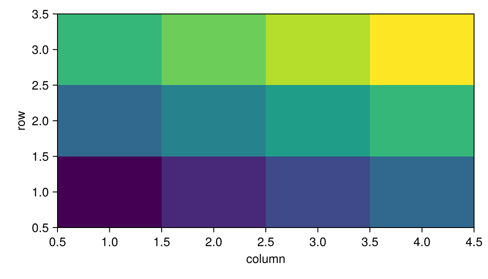

Inspect a grid
Hold your pointer over a heatmap or image cell to read its indices and value. Click the cell to select it; @bind captures that pick. The tooltip is (i,j) = value.
Notebook as text
Click a cell. The last cell reads its column, row, and value.
Draw the heatmap the way you already draw it, and pass that plot to RectInteractable so each cell is a hit. Hover reads the cell; the click is what this notebook stores.
begin
z = [Float64(i + 3j) for i in 1:4, j in 1:3]
fig = Figure(size = (560, 320))
ax = Axis(fig[1, 1]; xlabel = "column", ylabel = "row")
p = heatmap!(ax, 1:4, 1:3, z)
cells = RectInteractable(ax, p)
nothing
end@bind pick stores a click in pick. Hover updates the tooltip and does not change pick.
@bind pick masque(fig, cells)
Before a click, pick is nothing. pick.i is the column and pick.j is the row, both 1-based. z[pick] is the same cell. This cell reads pick, so it re-runs on the click.
if pick === nothing
"click a cell"
else
"column $(pick.i), row $(pick.j) — value $(pick.value)"
endclick a cellPrerequisites: Install and Getting started cells in your notebook. The layer kind is :grid, not :rects. Bars from barplot! are :rects and are a different job.
Overlay a heatmap
The notebook draws a small heatmap and passes that plot to RectInteractable. A click fills pick, and the last cell reads the column, the row, and the value. image! uses the same method. masque(fig) walks a Heatmap or Image and installs this layer for you.
Or pass edges and values yourself. Edges must be monotonic. values must have shape (length(xedges) - 1, length(yedges) - 1):
cells = RectInteractable(
ax;
grid = (0.5:1:4.5, 0.5:1:3.5, z),
id = :cells,
)payloads= on the grid= constructor is accepted and discarded. Cell payloads are always (; i, j, value) in the browser, not a Julia lookup table. RectInteractable(ax, p::Makie.Heatmap; payloads = …) is a MethodError.
A colorbar next to a heatmap is a value readout, not a cell pick. For more information, see Read coordinates.
Read a cell
Hold the pointer over a cell. The tooltip is (i,j) = value. A real cell smaller than about one screen pixel still shows that form: Masque ships one sample per screen pixel instead of values[], and does not warn. (i,j) with no value is the case where neither values nor sample was sent. For a color image, or any other non-real matrix, that is only the sub-pixel path: _grid_sample returns nothing and the manifest keeps the edges. A cell at least one screen pixel wide still builds values with Float32, and a non-real cell throws, so the widget does not mount. That is not the auto name/value table used on scatter and bars. For more information, see Tooltips.
Click the cell. In live Pluto, pick is a GridCellEvent: layer is :cells, pick.i and pick.j are 1-based (column, then row), and A[pick] is A[pick.i, pick.j]. pick.value is the cell when values[] was shipped, the screen-pixel sample when a real cell is smaller than one screen pixel, or nothing when neither was sent. The same RectInteractable used as a bar list (layout === :list) is an ElementEvent; layout === :grid is GridCellEvent. The cell is a highlight in the overlay. A click in empty space does not write the bond.
Tab and arrow keys skip :grid. Keyboard focus walks bars and scatter marks, not heatmap cells. For more information, see Keyboard and screen readers.
For selected= on :grid, see Tried selected= on a kind that cannot hydrate.
Brush cells with an ROI
Pair ROIInteractable with selects = :cells. On release, the bond is one GridWindowEvent: A[win] is A[win.i1:win.i2, win.j1:win.j2]. A brush that misses the grid has empty ranges, not []. The overlay fills the enclosed block and leaves the ROI box as the outline.
selects accepts :circles or :grid. Pointing it at a :rects bar layer raises ArgumentError.
Polar heatmaps
heatmap! on a PolarAxis is skipped with @warn in auto_interactables. An explicit axis-aligned grid on polar is misaligned. Use scatter or lines on polar instead.
Axis3 heatmaps are skipped the same way.